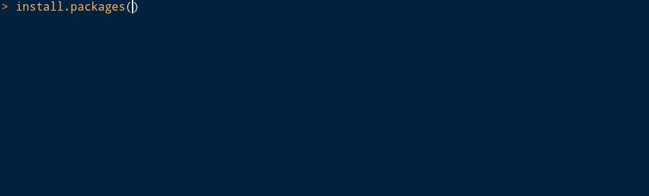

リリースノートにも載っていない RStudio 1.2.x の世界
ん？install.packagesするとき、ライブラリ名が補完される・・・？？？
なぜか私が纏めることに．

上の画像のように，パッケージ名を引用符で囲わずに入力し始め，tab キーを押すと幸せになれる．
パッケージの説明については，インストール済みの場合のみ見れるようだ．
残念ながら以下のように，c() で囲った中にパッケージ名を書き出しても，
パッケージ名を補完することはできない．
install.packages(c(tid))pacman パッケージや pak パッケージなど，パッケージの管理を便利にしてくれる
パッケージでも利用できるといいが，まあ難しいだろうことは想像に固くない．
ちなみに GitHub 上のパッケージをインストールしたいけど，
ユーザー名やパッケージ名があやふやな時には githubinstall パッケージが便利です
(参考: https://www.karada-good.net/analyticsr/r-341)．